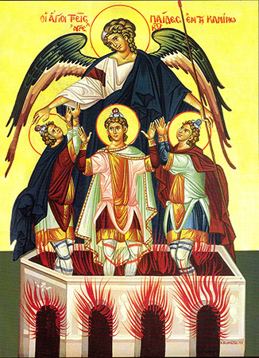

قصتهم
أين نجد خبرهم؟
الفتية الثلاثة القدّيسون فنلقى روايتهم في سفر دانيال النبي عينه. ولهم، في الترجمة السبعينية، نشيد يعرف بـ "نشيد الفتية الثلاثة" تجعله الترجمة السبعينية قبل قصّة سوسنّة مباشرة.
يذكر أن الترجمة الكاثوليكية العربية للكتاب المقدس تثبت نشيد الفتية الثلاثة كتتمة للإصحاح الثالث من سفر دانيال، فيما تجعل قصة سوسنّة في الإصحاح الثالث عشر من السفر وقصّة بال والتنّين في الإصحاح الرابع عشر.
يذكر أن الترجمة الكاثوليكية العربية للكتاب المقدس تثبت نشيد الفتية الثلاثة كتتمة للإصحاح الثالث من سفر دانيال، فيما تجعل قصة سوسنّة في الإصحاح الثالث عشر من السفر وقصّة بال والتنّين في الإصحاح الرابع عشر.
القصة باختصار:
بعد ذلك بزمن نصب نبوخذ نصّر تمثالاً من الذهب وأمر أن يسجد له جميع الناس فأطاعه الخلق كلهم. ولكن وشى الكلدانيون بالفتية الثلاثة إنهم لم يذعنوا. فأرسل الملك في طلبهم غاضباً وهدّد بإلقائهم في وسط أتّون النار المتّقدة إن لم يفعلوا. فأبى الثلاثة أن يسجدوا لغير إلههم وأسلموا لربّهم. إذ ذاك أمر الملك بإحماء النار سبعة أضعاف وإلقاء الثلاثة فيها وهم في سراويلهم وأقمصتهم وأرديتهم وألبستهم. فمن لظى النار احترق الذين أتوا بالثلاثة إلى الأتّون. كان الثلاثة موثقين. وعوض أن تلتهم ألسنة اللهب الفتية نزل ملاك الرب إلى الأتّون وطرد لهيب النار وجعل في وسط الأتّون ما شبه نسيم الندى المنعش فلم تمسّهم النار البتّة، لا هم ولا ألبستهم، فأنشدوا وسبّحوا وباركوا الله.
ويوجد التسبحة الرائعة التي سبَّحوا الله بها وهم في أتون النار، وموجود في تتمة سفر دانيال في الأسفار القانونية الثانية، وتقوم الكنيسة القبطية في صلاة التسبحة بصلاة هذه الصلاة في الهوس الثالث، وكذلك توجد إبصالية واطس للثلاثة فتيه القديسين بعنوان أريبسالين أو رتلوا للذي صُلِبَ
ويوجد التسبحة الرائعة التي سبَّحوا الله بها وهم في أتون النار، وموجود في تتمة سفر دانيال في الأسفار القانونية الثانية، وتقوم الكنيسة القبطية في صلاة التسبحة بصلاة هذه الصلاة في الهوس الثالث، وكذلك توجد إبصالية واطس للثلاثة فتيه القديسين بعنوان أريبسالين أو رتلوا للذي صُلِبَ
القصة من الكتاب المقدس سفر دانيال النبي الأصحاح الثالث:
1 نَبُوخَذْنَصَّرُ الْمَلِكُ صَنَعَ تِمْثَالًا مِنْ ذَهَبٍ طُولُهُ سِتُّونَ ذِرَاعًا وَعَرْضُهُ سِتُّ أَذْرُعٍ، وَنَصَبَهُ فِي بُقْعَةِ دُورَا فِي وِلاَيَةِ بَابِلَ. 2 ثُمَّ أَرْسَلَ نَبُوخَذْنَصَّرُ الْمَلِكُ لِيَجْمَعَ الْمَرَازِبَةَ وَالشِّحَنَ وَالْوُلاَةَ وَالْقُضَاةَ وَالْخَزَنَةَ وَالْفُقَهَاءَ وَالْمُفْتِينَ وَكُلَّ حُكَّامِ الْوِلاَيَاتِ، لِيَأْتُوا لِتَدْشِينِ التِّمْثَالِ الَّذِي نَصَبَهُ نَبُوخَذْنَصَّرُ الْمَلِكُ. 3 حِينَئِذٍ اجْتَمَعَ الْمَرَازِبَةُ وَالشِّحَنُ وَالْوُلاَةُ وَالْقُضَاةُ وَالْخَزَنَةُ وَالْفُقَهَاءُ وَالْمُفْتُونَ وَكُلُّ حُكَّامِ الْوِلاَيَاتِ لِتَدْشِينِ التِّمْثَالِ الَّذِي نَصَبَهُ نَبُوخَذْنَصَّرُ الْمَلِكُ، وَوَقَفُوا أَمَامَ التِّمْثَالِ الَّذِي نَصَبَهُ نَبُوخَذْنَصَّرُ. 4 وَنَادَى مُنَادٍ بِشِدَّةٍ: «قَدْ أُمِرْتُمْ أَيُّهَا الشُّعُوبُ وَالأُمَمُ وَالأَلْسِنَةُ، 5 عِنْدَمَا تَسْمَعُونَ صَوْتَ الْقَرْنِ وَالنَّايِ وَالْعُودِ وَالرَّبَابِ وَالسِّنْطِيرِ وَالْمِزْمَارِ وَكُلِّ أَنْوَاعِ الْعَزْفِ، أَنْ تَخِرُّوا وَتَسْجُدُوا لِتِمْثَالِ الذَّهَبِ الَّذِي نَصَبَهُ نَبُوخَذْنَصَّرُ الْمَلِكُ. 6 وَمَنْ لاَ يَخِرُّ وَيَسْجُدُ، فَفِي تِلْكَ السَّاعَةِ يُلْقَى فِي وَسَطِ أَتُّونِ نَارٍ مُتَّقِدَةٍ». 7 لأَجْلِ ذلِكَ وَقْتَمَا سَمِعَ كُلُّ الشُّعُوبِ صَوْتَ الْقَرْنِ وَالنَّايِ وَالْعُودِ وَالرَّبَابِ وَالسِّنْطِيرِ وَكُلِّ أَنْوَاعِ الْعَزْفِ، خَرَّ كُلُّ الشُّعُوبِ وَالأُمَمِ وَالأَلْسِنَةِ وَسَجَدُوا لِتِمْثَالِ الذَّهَبِ الَّذِي نَصَبَهُ نَبُوخَذْنَصَّرُ الْمَلِكُ.

8 لأَجْلِ ذلِكَ تَقَدَّمَ حِينَئِذٍ رِجَالٌ كَلْدَانِيُّونَ وَاشْتَكَوْا عَلَى الْيَهُودِ،
9 أَجَابُوا وَقَالُوا لِلْمَلِكِ نَبُوخَذْنَصَّرَ: «أَيُّهَا الْمَلِكُ، عِشْ إِلَى الأَبَدِ!
10 أَنْتَ أَيُّهَا الْمَلِكُ قَدْ أَصْدَرْتَ أَمْرًا بِأَنَّ كُلَّ إِنْسَانٍ يَسْمَعُ صَوْتَ الْقَرْنِ وَالنَّايِ وَالْعُودِ وَالرَّبَابِ وَالسِّنْطِيرِ وَالْمِزْمَارِ وَكُلِّ أَنْوَاعِ الْعَزْفِ، يَخِرُّ وَيَسْجُدُ لِتِمْثَالِ الذَّهَبِ.
11 وَمَنْ لاَ يَخِرُّ وَيَسْجُدُ فَإِنَّهُ يُلْقَى فِي وَسَطِ أَتُّونِ نَارٍ مُتَّقِدَةٍ.
12 يُوجَدُ رِجَالٌ يَهُودٌ، الَّذِينَ وَكَّلْتَهُمْ عَلَى أَعْمَالِ وِلاَيَةِ بَابِلَ: شَدْرَخُ وَمِيشَخُ وَعَبْدَنَغُوَ. هؤُلاَءِ الرِّجَالُ لَمْ يَجْعَلُوا لَكَ أَيُّهَا الْمَلِكُ اعْتِبَارًا. آلِهَتُكَ لاَ يَعْبُدُونَ، وَلِتِمْثَالِ الذَّهَبِ الَّذِي نَصَبْتَ لاَ يَسْجُدُونَ».
13 حِينَئِذٍ أَمَرَ نَبُوخَذْنَصَّرُ بِغَضَبٍ وَغَيْظٍ بِإِحْضَارِ شَدْرَخَ وَمِيشَخَ وَعَبْدَنَغُوَ. فَأَتَوْا بِهؤُلاَءِ الرِّجَالِ قُدَّامَ الْمَلِكِ.
14 فَأَجَابَ نَبُوخَذْنَصَّرُ وَقَالَ لَهُمْ: «تَعَمُّدًا يَا شَدْرَخُ وَمِيشَخُ وَعَبْدَنَغُوَ لاَ تَعْبُدُونَ آلِهَتِي وَلاَ تَسْجُدُونَ لِتِمْثَالِ الذَّهَبِ الَّذِي نَصَبْتُ!
15 فَإِنْ كُنْتُمُ الآنَ مُسْتَعِدِّينَ عِنْدَمَا تَسْمَعُونَ صَوْتَ الْقَرْنِ وَالنَّايِ وَالْعُودِ وَالرَّبَابِ وَالسِّنْطِيرِ وَالْمِزْمَارِ وَكُلَّ أَنْوَاعِ الْعَزْفِ إِلَى أَنْ تَخِرُّوا وَتَسْجُدُوا لِلتِّمْثَالِ الَّذِي عَمِلْتُهُ. وَإِنْ لَمْ تَسْجُدُوا فَفِي تِلْكَ السَّاعَةِ تُلْقَوْنَ فِي وَسَطِ أَتُّونِ النَّارِ الْمُتَّقِدَةِ. وَمَنْ هُوَ الإِلهُ الَّذِي يُنْقِذُكُمْ مِنْ يَدَيَّ؟»
16 فَأَجَابَ شَدْرَخُ وَمِيشَخُ وَعَبْدَنَغُوَ وَقَالُوا لِلمَلِكِ: «يَا نَبُوخَذْنَصَّرُ، لاَ يَلْزَمُنَا أَنْ نُجِيبَكَ عَنْ هذَا الأَمْرِ.
17 هُوَذَا يُوجَدُ إِلهُنَا الَّذِي نَعْبُدُهُ يَسْتَطِيعُ أَنْ يُنَجِّيَنَا مِنْ أَتُّونِ النَّارِ الْمُتَّقِدَةِ، وَأَنْ يُنْقِذَنَا مِنْ يَدِكَ أَيُّهَا الْمَلِكُ.
18 وَإِلاَّ فَلِيَكُنْ مَعْلُومًا لَكَ أَيُّهَا الْمَلِكُ، أَنَّنَا لاَ نَعْبُدُ آلِهَتَكَ وَلاَ نَسْجُدُ لِتِمْثَالِ الذَّهَبِ الَّذِي نَصَبْتَهُ».
19 حِينَئِذٍ امْتَلأَ نَبُوخَذْنَصَّرُ غَيْظًا وَتَغَيَّرَ مَنْظَرُ وَجْهِهِ عَلَى شَدْرَخَ وَمِيشَخَ وَعَبْدَنَغُوَ، فَأَجَابَ وَأَمَرَ بِأَنْ يَحْمُوا الأَتُونَ سَبْعَةَ أَضْعَافٍ أَكْثَرَ مِمَّا كَانَ مُعْتَادًا أَنْ يُحْمَى.
20 وَأَمَرَ جَبَابِرَةَ الْقُوَّةِ فِي جَيْشِهِ بِأَنْ يُوثِقُوا شَدْرَخَ وَمِيشَخَ وَعَبْدَنَغُوَ وَيُلْقُوهُمْ فِي أَتُّونِ النَّارِ الْمُتَّقِدَةِ.
21 ثُمَّ أُوثِقَ هؤُلاَءِ الرِّجَالُ فِي سَرَاوِيلِهِمْ وَأَقْمِصَتِهِمْ وَأَرْدِيَتِهِمْ وَلِبَاسِهِمْ وَأُلْقُوا فِي وَسَطِ أَتُّونِ النَّارِ الْمُتَّقِدَةِ.
22 وَمِنْ حَيْثُ إِنَّ كَلِمَةَ الْمَلِكِ شَدِيدَةٌ وَالأَتُونَ قَدْ حَمِيَ جِدًّا، قَتَلَ لَهِيبُ النَّارِ الرِّجَالَ الَّذِينَ رَفَعُوا شَدْرَخَ وَمِيشَخَ وَعَبْدَنَغُوَ.
23 وَهؤُلاَءِ الثَّلاَثَةُ الرِّجَالِ، شَدْرَخُ وَمِيشَخُ وَعَبْدَنَغُوَ، سَقَطُوا مُوثَقِينَ فِي وَسَطِ أَتُّونِ النَّارِ الْمُتَّقِدَةِ.
24 حِينَئِذٍ تَحَيَّرَ نَبُوخَذْنَصَّرُ الْمَلِكُ وَقَامَ مُسْرِعًا فَأَجَابَ وَقَالَ لِمُشِيرِيهِ: «أَلَمْ نُلْقِ ثَلاَثَةَ رِجَال مُوثَقِينَ فِي وَسَطِ النَّارِ؟» فَأَجَابُوا وَقَالُوا لِلْمَلِكِ: «صَحِيحٌ أَيُّهَا الْمَلِكُ».
25 أَجَابَ وَقَالَ: «هَا أَنَا نَاظِرٌ أَرْبَعَةَ رِجَال مَحْلُولِينَ يَتَمَشَّوْنَ فِي وَسَطِ النَّارِ وَمَا بِهِمْ ضَرَرٌ، وَمَنْظَرُ الرَّابعِ شَبِيهٌ بِابْنِ الآلِهَةِ».
26 ثُمَّ اقْتَرَبَ نَبُوخَذْنَصَّرُ إِلَى بَابِ أَتُّونِ النَّارِ الْمُتَّقِدَةِ وَأَجَابَ، فَقَالَ: «يَا شَدْرَخُ وَمِيشَخُ وَعَبْدَنَغُو، يَا عَبِيدَ اللهِ الْعَلِيِّ، اخْرُجُوا وَتَعَالَوْا». فَخَرَجَ شَدْرَخُ وَمِيشَخُ وَعَبْدَنَغُو مِنْ وَسَطِ النَّارِ.
27 فَاجْتَمَعَتِ الْمَرَازِبَةُ وَالشِّحَنُ وَالْوُلاَةُ وَمُشِيرُو الْمَلِكِ وَرَأَوْا هؤُلاَءِ الرِّجَالَ الَّذِينَ لَمْ تَكُنْ لِلنَّارِ قُوَّةٌ عَلَى أَجْسَامِهِمْ، وَشَعْرَةٌ مِنْ رُؤُوسِهِمْ لَمْ تَحْتَرِقْ، وَسَرَاوِيلُهُمْ لَمْ تَتَغَيَّرْ، وَرَائِحَةُ النَّارِ لَمْ تَأْتِ عَلَيْهِمْ.
28 فَأَجَابَ نَبُوخَذْنَصَّرُ وَقَالَ: «تَبَارَكَ إِلهُ شَدْرَخَ وَمِيشَخَ وَعَبْدَنَغُوَ، الَّذِي أَرْسَلَ مَلاَكَهُ وَأَنْقَذَ عَبِيدَهُ الَّذِينَ اتَّكَلُوا عَلَيْهِ وَغَيَّرُوا كَلِمَةَ الْمَلِكِ وَأَسْلَمُوا أَجْسَادَهُمْ لِكَيْلاَ يَعْبُدُوا أَوْ يَسْجُدُوا لإِلهٍ غَيْرِ إِلهِهِمْ.
29 فَمِنِّي قَدْ صَدَرَ أَمْرٌ بِأَنَّ كُلَّ شَعْبٍ وَأُمَّةٍ وَلِسَانٍ يَتَكَلَّمُونَ بِالسُّوءِ عَلَى إِلهِ شَدْرَخَ وَمِيشَخَ وَعَبْدَنَغُوَ، فَإِنَّهُمْ يُصَيَّرُونَ إِرْبًا إِرْبًا، وَتُجْعَلُ بُيُوتُهُمْ مَزْبَلَةً، إِذْ لَيْسَ إِلهٌ آخَرُ يَسْتَطِيعُ أَنْ يُنَجِّيَ هكَذَا».
30 حِينَئِذٍ قَدَّمَ الْمَلِكُ شَدْرَخَ وَمِيشَخَ وَعَبْدَنَغُوَ فِي وِلاَيَةِ بَابِلَ.
قصة الثلاثة فتية في نقاط بسيطة
- أرتبط الفتية الثلاث بصداقة مقدسة مع دانيال النبي ، وشاركوه حياة
القداسة ورفضوا التنجس بأطياب الملك كما كانوا تلاميذ مخلصين في مدرســـة
الصلاة وجمعتهم بدانيال النبي إجتماعات صلاة مشتركة .
عندما فسر دان يال حلم نبوخذ نصر وكافأة نبوخذنصر بأن نصبه حاكما ً علي بابل ، ورئيسا ً علي جميع حكمائها ، طلب دانيال من أجل أصدقائه الفتية الثلاث ، فولي شدرخ وميشخ وعبدنغو علي أعمال ولاية بابل ( دا 2 : 49 ).
عندما فسر دان يال حلم نبوخذ نصر وكافأة نبوخذنصر بأن نصبه حاكما ً علي بابل ، ورئيسا ً علي جميع حكمائها ، طلب دانيال من أجل أصدقائه الفتية الثلاث ، فولي شدرخ وميشخ وعبدنغو علي أعمال ولاية بابل ( دا 2 : 49 ).
- عندما أقام نبوخذنصر تمثالا ً لشخصه من الذهب ، وطلب أن يسجد له
الكل ، وألا تعرض الممتنعون لحرقهم في أتون النار المتقدة ، رفض الثلاث
فتية في شجاعة نادرة السجود للتمثال مما أثار غضب الملك حتي أنه أمر أن يُحميَ
الأتون سبعة أضعاف ، وأن يقيد الثلاث فتية ويلقوا في الأتون مقيدين ،
ورغم شدة نيران الأتون التي أهل كت الرجال الذين رفعوا شدرخ وميشخ
وعبدنغو وألقوهم في النار .. إلا أن النار لم يكن لها سلطان علي الثلاث فتية
بل رآهم نبوخذنصر ومشيرته يتمشون في وسط النار ومعهم الرابع الشبيه بإبن
الآلهه ، وهنا أخرجهم نبوخذنصر وأكرمهم وأكرم ألههم
( دا 3 : 8 – 30 ).

- كان الثلاث فتية في حوالي الخامسة والثلاثين من العمر عندما إجتازوا
تجربة الأتون .
-كان يمكن للثلاث فتية أن يجدوا العديد من الأعذار يبررون بها سجودهم للتمثال منها :
1: أنهم مسبين وليس للأسير حرية أن يفعل ما يغضب السيادة .
2: مجاملة لنبوخذنصر الملك الجبار الذي رفعهم من ذل العبودية والأسر وجعلهم علي أعمال بابل .
3: رفضهم للسجود يعرضهم للموت فيفقدون كل فرصة للقيام بأي عمل لخدمة أخوتهم المسبين .
4: هم غرباء في هذه البلاد ومضطرين لمسايرة أهلها .
5 : كان يمكنهم التظاهر بالسجود الخارجي ، ول كن الله في القلب خاصة ونبوخذنصر لم يطلب منهم ترك آلههم ، بل مجرد السجود للتمثال مجرد رسميات فقط .
6: هذا الأمر سوف يتم مرة واحدة ويرجعوا إلي عبادتهم .
7: هم ليسوا أول من سجد للأوثان فقد عبد آباؤهم الأوثان في أورشليم ويهوذا وإسرائيل حتي في داخل هيكل الرب عينه ، ودون ضغط خارجي بينما هم غرباء مضطرون لذلك ، ول كن الفتية الثلاث ويا للعجب لم يلتمسوا لأنفسهم أي من هذه الأعذار لذلك تجد الله في حياتهم وأنقذهم من الأتون.
- رنم الثلاث فتية في الأتون تسبحة جميلة ترددها ال كنيسة كل يوم من خلال الهوس الثالث في تسبحة نصف الليل.
-كان يمكن للثلاث فتية أن يجدوا العديد من الأعذار يبررون بها سجودهم للتمثال منها :
1: أنهم مسبين وليس للأسير حرية أن يفعل ما يغضب السيادة .
2: مجاملة لنبوخذنصر الملك الجبار الذي رفعهم من ذل العبودية والأسر وجعلهم علي أعمال بابل .
3: رفضهم للسجود يعرضهم للموت فيفقدون كل فرصة للقيام بأي عمل لخدمة أخوتهم المسبين .
4: هم غرباء في هذه البلاد ومضطرين لمسايرة أهلها .
5 : كان يمكنهم التظاهر بالسجود الخارجي ، ول كن الله في القلب خاصة ونبوخذنصر لم يطلب منهم ترك آلههم ، بل مجرد السجود للتمثال مجرد رسميات فقط .
6: هذا الأمر سوف يتم مرة واحدة ويرجعوا إلي عبادتهم .
7: هم ليسوا أول من سجد للأوثان فقد عبد آباؤهم الأوثان في أورشليم ويهوذا وإسرائيل حتي في داخل هيكل الرب عينه ، ودون ضغط خارجي بينما هم غرباء مضطرون لذلك ، ول كن الفتية الثلاث ويا للعجب لم يلتمسوا لأنفسهم أي من هذه الأعذار لذلك تجد الله في حياتهم وأنقذهم من الأتون.
- رنم الثلاث فتية في الأتون تسبحة جميلة ترددها ال كنيسة كل يوم من خلال الهوس الثالث في تسبحة نصف الليل.
نياحة الثلاثة فتية القديسين حنانيا وعزريا وميصائيل (10 بشنس)
في مثل هذا اليوم تذكار نياحة الثلاثة فتية القديسين: حنانيا وعزاريا وميصائيل وهؤلاء القديسون هم أولاد يهوياقيم ملك يهوذا وكان قد سباهم نبوخذنصر إلى بابل ولما أختار هذا الملك بعض الفتيان المسبيين لخدمته كان هؤلاء ودانيال ابن أختهم من ضمن الذين اختارهم. فسماهم اشفنز رئيس الخصيان أسماءا أخري. فسمي دانيال بلطشاصر، وحنانيا شدرخ وميصائيل ميشخ، وعزاريا عبدناغو. أما هؤلاء فقرروا فيما بينهم أن لا يأكلوا من غير ذبائح بني اسرائيل وطلبوا من رئيس الخصيان أن يعفيهم من طعام اللحوم ويعطيهم بقولا. فقال لهم أخشى أن يتغير منظر وجوهكم فيهلكني الملك فأجابوه " جربنا. وإذا لم تنصلح وجوهنا فافعل ما تريد " ثم صاروا يأكلون البقول فكانت وجوههم تتلألأ حسنا وجمالا بنعمة الله. ووجدوا نعمة في عيني الملك فجعلهم حكاما علي كل أعمال بابل ولما أقام الصورة الذهب ولم يسجدوا لها سعي بهم الذين كانوا يحسدونهم فاستحضرهم نبوخذنصر وسألهم عن ذلك فاعترفوا بالإله الحقيقي فألقاهم في الأتون فأرسل الرب ملاكه وحول اللهيب إلى ندي بارد مع أنه أحرق الذين رموهم في الأتون ولما رأي الملك ذلك آمن بإلههم وزادهم رفعة. وأعلي منزلتهم ولما كان اليوم العاشر من بشنس وكانوا قائمين يصلون في منزلهم وعند سجودهم أسلموا نفوسهم بيد الرب فحدثت للوقت زلزلة عظيمة في المدينة فارتعب الملك وتقصي من دانيال عن السبب فأعلمه أن الثلاثة فتية قد تنيحوا فأتي إلى المكان وحزن عليهم وأمر أن تعمل لهم ثلاثة أسرة من عاج ,ان يكفنوا بحلل من حرير ويضعوهم عليها ثم أمر أن يعمل له سرير من ذهب حتى إذا مات يوضع عليه بين أجسادهم. وهكذا كان.
ولما جلس البابا ثاؤفيلس البطريرك الثالث والعشرون علي الكرسي المرقسي بني لهم كنيسة وأراد نقل أجساد القديسين إليها. وأوفد لذلك القديس يوحنا القصير فذهب إلى بابل ولما وصل إلى حيث الأجساد سمع صوتا منهم يقول: "ان الرب قد رسم ألا تفارق أجسادنا هذا الموضع. وحتي لا يضيع تعبك فعند رجوعك قل للبطريرك أن يعمر القناديل ليلة التكريس بالزيت وستظهر قوة الله فيها. ولما عاد أعلم البابا البطريرك بذلك فعمل كما أمروه فاشتعلت القناديل فمجدوا الله وأتموا تكريس الكنيسة التي لهؤلاء القديسين صلاتهم تكون معنا , ولربنا المجد دائما. آمين.
المزيد من المعلومات
ولما جلس البابا ثاؤفيلس البطريرك الثالث والعشرون علي الكرسي المرقسي بني لهم كنيسة وأراد نقل أجساد القديسين إليها. وأوفد لذلك القديس يوحنا القصير فذهب إلى بابل ولما وصل إلى حيث الأجساد سمع صوتا منهم يقول: "ان الرب قد رسم ألا تفارق أجسادنا هذا الموضع. وحتي لا يضيع تعبك فعند رجوعك قل للبطريرك أن يعمر القناديل ليلة التكريس بالزيت وستظهر قوة الله فيها. ولما عاد أعلم البابا البطريرك بذلك فعمل كما أمروه فاشتعلت القناديل فمجدوا الله وأتموا تكريس الكنيسة التي لهؤلاء القديسين صلاتهم تكون معنا , ولربنا المجد دائما. آمين.